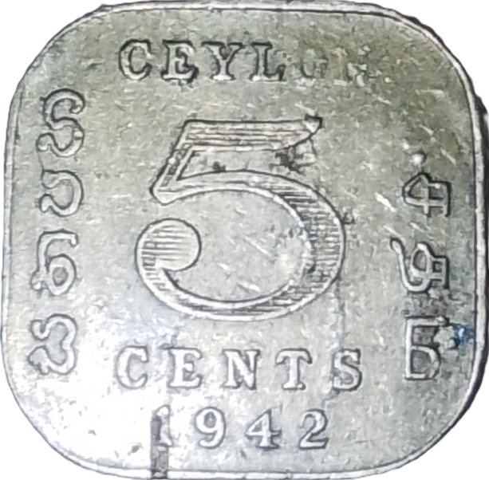
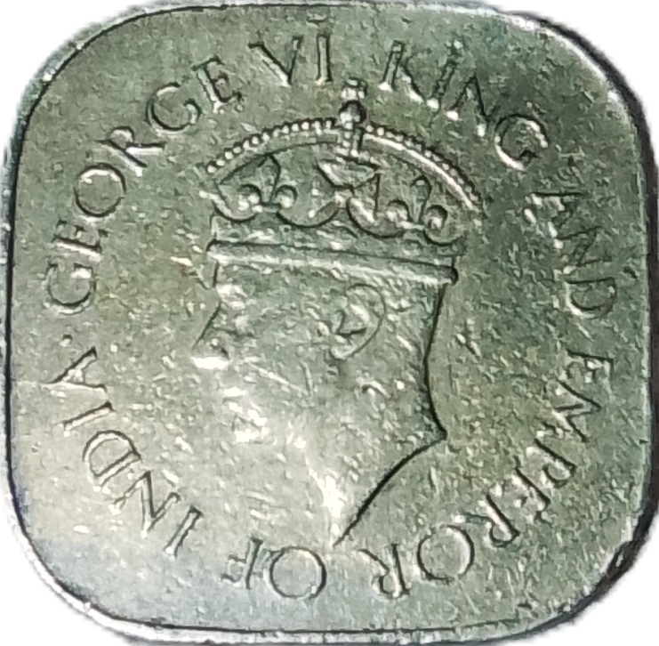

සත පහ (1942-1945)
ලංකාව
ලංකාණ්ඩුව වෙනුවෙන් 1942/09/01 වන දින නිකුත් කළ නිකල් - ලෝකඩ සත පහ කාසිය.


•ඉදිරිපස: Ceylon පාඨය, නිකුත් කළ වර්ශය සහ ඉංග්රීසි, සිංහල හා දෙමළ භාෂා තුනෙන්ම 'සත පහ' පාඨය සටහන් කළ ඇත.
•පිටුපස: මහ රජුගේ හිසෙහි රුව සහ '6වන ජෝර්ජ් රජු හා ඉන්දියාවේ අධිරාජ්යයා' යන පාඨය ඉංග්රීසියෙන්.
මෙම කාසියේ ලක්ෂණ
- නාමික අගය: ශත පහ
- වර්ෂය: 1942-1945
- හැඩය: රවුම් කොන් සතරක් ඇති සමචතුරස්රයක හැඩති